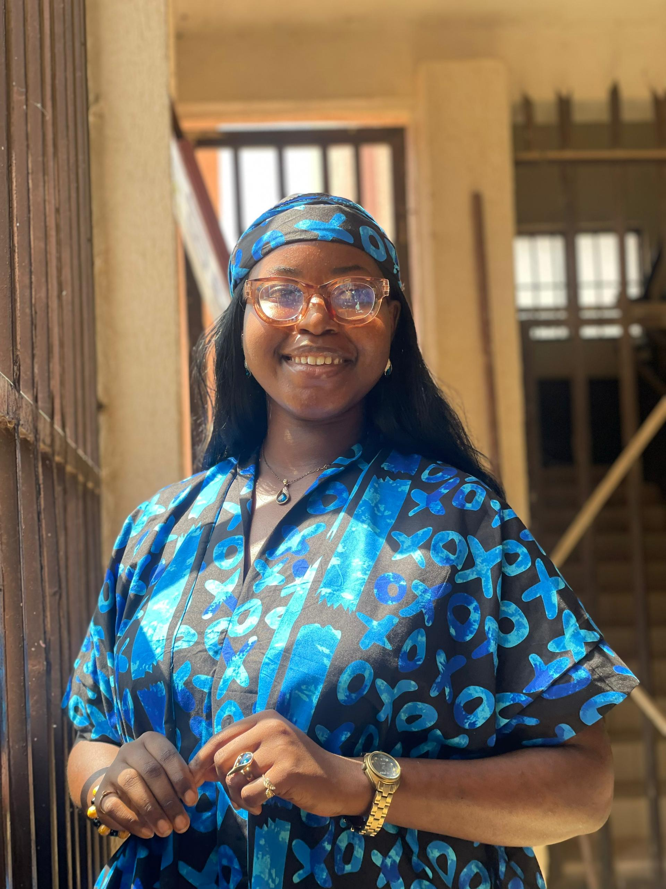
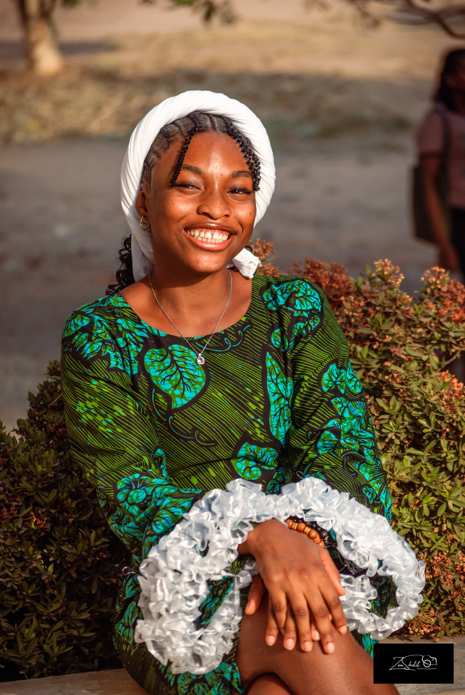
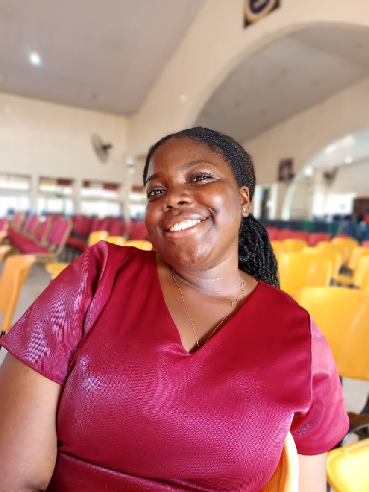
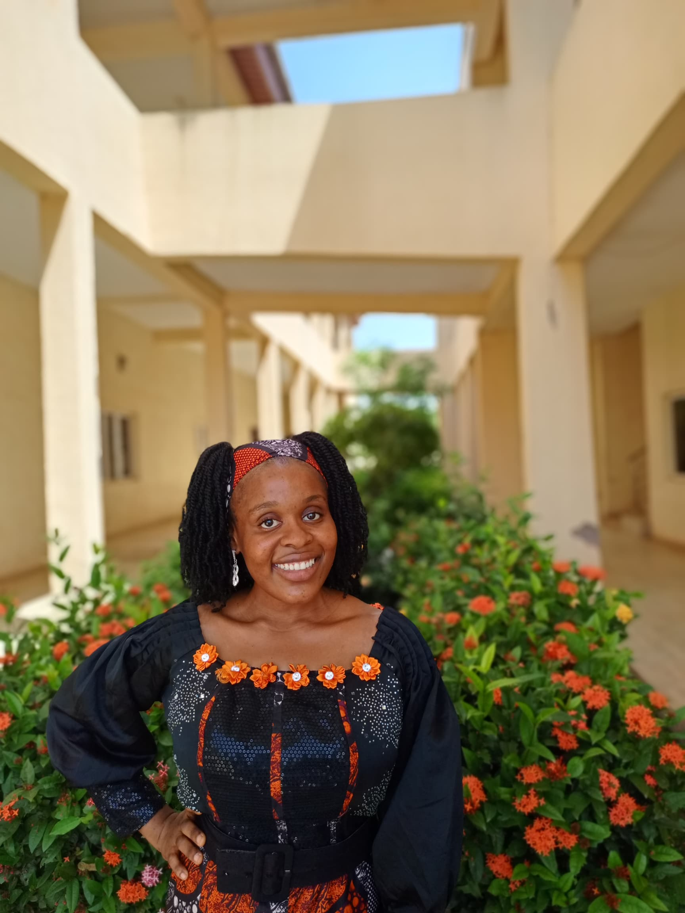
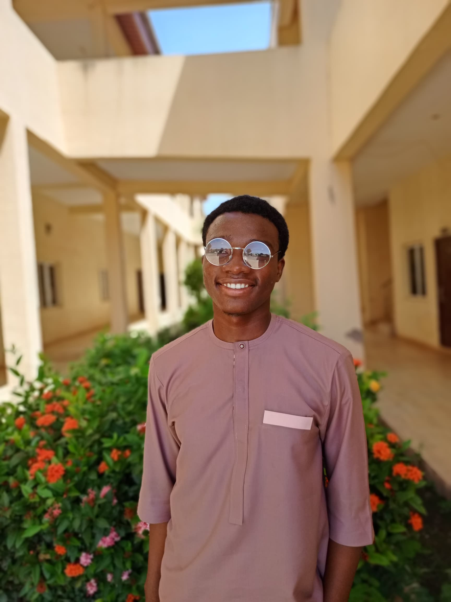

Meet the gang!
Joshua Atayero
A graduate of law at Bingham university, Joshua is an ardent lover of music, with a voice that calms the heart and a dexterity in playing
Elughi Precious Chioma
Chioma is a Mass Communication student at Bingham University, originally from Ebonyi State, Nigeria. With a vibrant personality and diverse interests, she thrives in both creative and active spaces. Her hobbies include singing, dancing, and enjoying all things music. She’s also passionate about baking and cooking, loves playing basketball, badminton, and is always up for anything sporty. When she’s not on the move, you’ll likely find her reading and exploring new ideas. Her energy, creativity, and love for communication make her stand out wherever she goes.
Desmond Bwala Yati
Desmond, a Cyber Security student at Bingham University from Borno State, Nigeria, is a tech enthusiast with a love for design and deep discussions—especially on controversial and theological topics. He enjoys minimalistic solace and expresses himself through emotive writing. A skilled keyboard player, Desmond also finds joy in making and listening to music, blending intellect with creativity in everything he does.
Cletus Amy Emem
Amy is a vibrant Public Health student at Bingham University, proudly from Akwa Ibom State, Nigeria. She’s a lover of all things expressive—reading, writing, singing, and dancing fuel her creative energy, while listening to music and watching movies help her unwind and explore new perspectives. With a curious mind and a bright spirit, Amy finds joy in both thoughtful reflection and joyful movement.
John Josiah Ali
Josiah, a Computer Science student at Bingham University, is from Borno State, Nigeria. He has a wide range of hobbies that keep him entertained and engaged. Josiah enjoys singing and has a passion for music, both as a listener and performer. He also loves cooking, experimenting with flavors and creating delicious meals. When it comes to entertainment, he enjoys playing and engaging in games, making the most of his free time.

Precious Akpako Omoyebagbe
Precious, a student of Economics at Bingham University, is from Edo State, Nigeria. She has a variety of hobbies that keep her active and engaged. She enjoys baking and cooking, experimenting with recipes and flavors in the kitchen. Precious has a love for singing and is passionate about music, often finding joy in both listening and performing. She also stays active by playing badminton and enjoys the thrill of watching football, keeping up with the latest matches and teams.
Joshua James Ojonugwa
Joshua, a Quantity Surveying student at Bingham University, is from Kogi State, Nigeria. He’s a dynamic individual with a variety of interests, including music, movies, and badminton. Joshua has a deep love for playing the bass guitar, showcasing his musical talent alongside his other hobbies. He also enjoys listening to music, which fuels his creativity, and he has a keen interest in watching movies as a way to unwind. Active and energetic, he enjoys playing badminton and anything related to sports, displaying his competitive side. Joshua can also be hyperactive at times, bringing a fun, spontaneous energy to those around him.

Cletus Creda Itoro
Creda, a Business Administration student at Bingham University, is from Akwa Ibom State, Nigeria. She’s a gentle creative soul who enjoys writing poetry, singing, baking, and listening to music. Whether she's lost in a song or crafting lines of verse, she brings warmth and light wherever she goes—always paired with her beautiful smile that leaves a lasting impression.
Ahmadu Peniel
Peniel is a vibrant and uplifting individual with a strong passion for singing and music. He finds joy in encouraging others and creating an atmosphere of positivity, often through his love for worship. His connection to music is not only a hobby but a way to inspire and motivate those around him, particularly through worshipful expressions that resonate deeply with his faith and community. Peniel is studying Law at Bingham University and hails from Edo state, Nigeria.

Celestine Amarachi Berahcah
Berahcah, a Radiography student at Bingham University, is from Enugu State, Nigeria. She is passionate about singing and enjoys listening to Afro gospel music, which inspires and uplifts her. Gisting (chatting) with friends is one of her favorite ways to connect, as she loves sharing stories and having deep conversations. In her free time, she also enjoys reading, which broadens her knowledge. Although she has a calm demeanor, Berahcah can be vibrant at times, bringing energy and warmth to any setting.
Ibrahim Grace Dikko
Grace, a Computer Science student at Bingham University, from the Federal Capital Territory, Nigeria, has a variety of hobbies. She enjoys singing, listening to music, and tuning into Christian podcasts on YouTube. Grace is passionate about cooking and eating snacks, loves gaming, writing, and reading. She also enjoys laughing and takes time to relax with a good sleep.

Ijeoma Akamihe Goodness
Ijeoma, a Law student at Bingham University, hails from Imo State, Nigeria. She is a person with a variety of interests that reflect her creativity and thoughtful nature. Singing is one of her favorite activities, and she finds joy in expressing herself through music. Ijeoma also enjoys reading, immersing herself in books that help her grow intellectually. Her passion for cooking allows her to experiment in the kitchen and share her delicious creations. When it comes to unwinding, she loves listening to music, which helps her relax and recharge.
Gold Joe-Bassey Mfoniso
Gold is a Medical Laboratory Science student at Bingham University, proudly from Cross River State, Nigeria. She has a deep love for singing, dancing, and listening to music, often using them as ways to express joy and unwind. She enjoys the art of baking and finds comfort in soliloquy, often reflecting and speaking her thoughts aloud as a form of creative expression. Thoughtful, expressive, and driven, she brings heart and depth into everything she does—whether in the lab or everyday life.

Olorunda Damilola Samuel
Damilola is a Computer Science student at Bingham University, hailing from Ondo State, Nigeria. He’s passionate about technology, with a growing interest in coding and digital innovation. Outside academics, Damilola enjoys singing, listening to music, and spending time in the kitchen, where he loves baking and cooking. Creative and driven, he brings both heart and skill to everything he does.